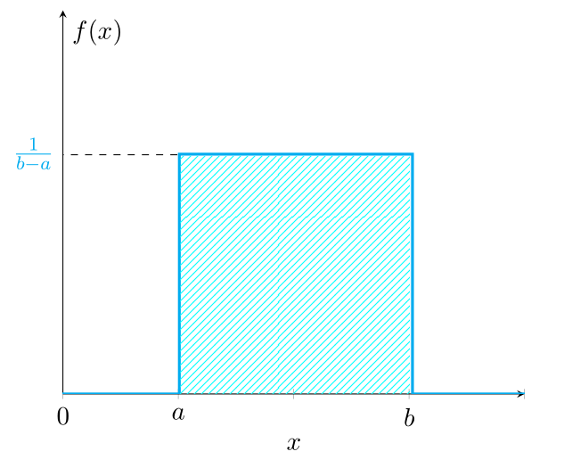
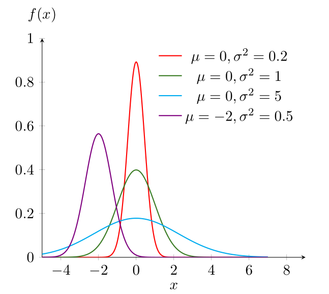
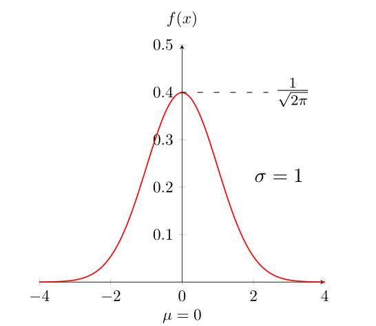
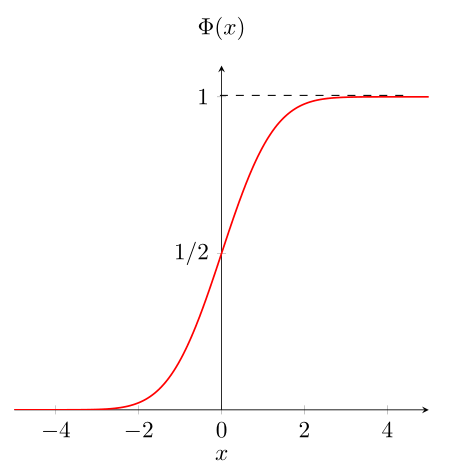
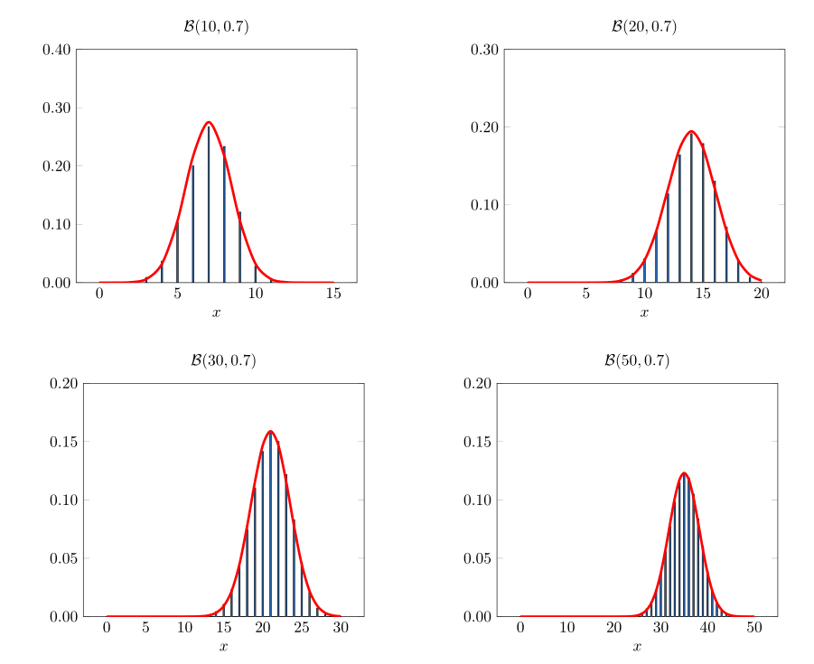

4 Lois usuelles continues
Loi uniforme \(U(a,b)\)
La loi uniforme est la loi exacte de phénomènes continus uniformément répartis sur un intervalle.
Définition 4.1 La variable aléatoire \(X\) suit une loi uniforme sur le segment \([a,b]\) avec \(a < b\) si sa densité de probabilité est donnée par \[f(x)= \left\lbrace \begin{array}{ll} \frac{1}{b-a} & \mbox{si} \quad x \in [a,b]\\ 0 & \mbox{si} \quad x \notin [a,b] \end{array} \right. = \frac{1}{b-a} {1}_{[a,b]}(x)\]
Quelques commentaires:
La loi uniforme continue étant une loi de probabilité, l’aire hachurée en bleu sur la Figure Figure 4.1) vaut \(1\).
La fonction de répartition associée à la loi uniforme continue est \[F_X(x)= \left\lbrace \begin{array}{ll} 0 & \mbox{si} \quad x < a \\ \displaystyle \frac{x-a}{b-a} & \mbox{si} \quad a \le x \le b \\ 1 & \mbox{si} \quad x > b \end{array} \right.\]
Propriétés: Si \(X\) est une v.a.c qui suit la loi uniforme sur \([a,b]\):
\(E(X) = \displaystyle \frac{b+a}{2}\)
\(V(X) = \displaystyle \frac{(b-a)^2}{12}\)
Exercice
Soit \(X \thicksim U(0,10)\). Calculer:
\(P(X <3)\)
\(P(X\ge 6)\)
\(P(3 < X < 8)\)
Loi exponentielle \(\mathcal{E}(\lambda)\)
Définition 4.2 On dit qu’une variable aléatoire \(X\) est exponentielle (ou suit la loi exponentielle) de paramètre \(\lambda\) si sa densité est donnée par
\[f(x)= \left\lbrace \begin{array}{ll} \lambda e^{- \lambda x} & \mbox{si} \quad x \ge 0\\ 0 & \mbox{si} \quad x < 0 \end{array} \right. = \lambda e^{- \lambda x} {1}_{\mathbb{R}^{+}}(x)\]
On dit \(X \thicksim \mathcal{E}(\lambda)\)
La fonction de répartition \(F\) d’une variable aléatoire exponentielle est donnée par
\[\begin{align} \mbox{Si}\,\, x \ge 0 \quad F(x) &= P(X \le x) = \int_0^x f(t)dt \\ &= \int_0^x \lambda e^{- \lambda t} dt \\ &= \big[ -e^{- \lambda t} \big]_0^x = 1-e^{- \lambda x} \end{align}\]
Propriétés: Si \(X \thicksim \mathcal{E}(\lambda)\)
\(E(X) = \displaystyle \frac{1}{\lambda}\)
\(V(X)= \displaystyle \frac{1}{\lambda^2}\)
Note
Cas d’utilisations de la loi exponentielle : Dans la pratique, on rencontre souvent la distribution exponentielle lorsqu’il s’agit de représenter le temps d’attente avant l’arrivée d’un événement spécifié. Une loi exponentielle modélise la durée de vie d’un phénomène sans mémoire, ou sans vieillissement, ou sans usure. En d’autres termes, le fait que le phénomène ait duré pendant un temps \(t\) ne change rien à son espérance de vie à partir du temps \(t\). On dit qu’une variable aléatoire non négative \(X\) est sans mémoire lorsque
\[P(X > t+h | X > t) = P(X > h) \quad \quad \forall \quad t,h \ge 0\]
Par exemple, la durée de vie de la radioactivité ou d’un composant électronique, le temps qui nous sépare d’un prochain tremblement de terre ou du prochain appel téléphonique mal aiguillé sont toutes des variables aléatoires dont les distributions tendent en pratique à se rapprocher de distributions exponentielles.
Loi Normale ou de Laplace-Gauss \(\mathcal{N}(\mu,\sigma^2)\)
Définition 4.3 Une variable aléatoire \(X\) est dite normale avec paramètres \(\mu\) et \(\sigma^2\) si la densité de \(X\) est donnée par
\[f(x) = \frac{1}{\sigma \sqrt{2\pi}} e^{ \displaystyle -(x - \mu)^2/2\sigma^2} \quad \quad \forall \,\, x \in \mathbb{R}\]
Avec \(\mu \in \mathbb{R}\) et \(\sigma \in \mathbb{R}^{+}\). On dit que \(X \thicksim \mathcal{N}(\mu,\sigma^2)\).
Remarque: On admet que \(\int_{-\infty}^{+\infty}f(x)dx = 1\) dans la mesure où l’intégration analytique est impossible.
Étude de la densité de la loi Normale
La fonction \(f\) est paire autour d’un axe de symétrie \(x = \mu\) car \(f(x + \mu ) = f(\mu - x)\).
\(f'(x)=0\) pour \(x=\mu\), \(f'(x) < 0\) pour \(x < \mu\) et \(f'(x) > 0\) pour \(x > \mu\)

Propriétés: Soit \(X \thicksim \mathcal{N}(\mu,\sigma^2)\), on a:
- \(E(X)=\mu\)
- \(V(X)=\sigma^2\)
Théorème 4.1 (Stabilité de la loi normale) Soit \(X_1\) et \(X_2\) deux variables aléatoires normales et indépendantes de paramètres respectifs \((\mu_1,\sigma_1^2)\) et \((\mu_2,\sigma_2^2)\), alors leur somme \(X_1+X_2\) est une variable aléatoire normale de paramètres \((\mu_1 + \mu_2,\sigma_1^2+\sigma_2^2)\).
Loi Normale centrée réduite \(\mathcal{N}(0,1)\)
Définition 4.4 Une variable aléatoire continue \(X\) suit une loi normale centrée réduite si sa densité de probabilité est donnée par
\[ f(x) = \frac{1}{{\sqrt {2\pi } }}e^{\displaystyle - \frac{1}{2} x^2} \quad \quad \forall \,\, x \in \mathbb{R} \]
On dit \(X \thicksim \mathcal{N}(0,1)\).
Remarque: \(E(X)=0\) et \(V(X)=1\).


Relation entre loi normale et loi normale centrée réduite
Théorème 4.2 (Relation avec la loi normale) Si \(X\) suit une loi normale \(\mathcal{N}(\mu,\sigma^2)\), alors \(\displaystyle Z= \frac{X-\mu}{\sigma}\) est une variable centrée réduite qui suit la loi normale centrée réduite \(\mathcal{N}(0,1)\).
Calcul des probabilités d’une loi normale
La fonction de répartition de la loi normale réduite permet d’obtenir les probabilités associées à toutes variables aléatoires normales \(\mathcal{N}(\mu,\sigma^2)\) après transformation en variable centrée réduite.
Définition 4.5 On appelle fonction \(\Phi\), la fonction de répartition de la loi normale centrée réduite \(\mathcal{N}(0,1)\), telle que
\[\forall \,\, x \in \mathbb{R} \quad \Phi(x) = P(X \le x) = \frac{1}{{\sqrt {2\pi}}} \int_{-\infty}^x f(t)dt\]
Propriétés: Les propriétés associées à la fonction de répartition \(\Phi\) sont:
-
\(\Phi\) est croissante, continue et dérivable sur \(\mathbb{R}\) et vérifie:
\(\lim\limits_{x\to - \infty} \Phi(x) = 0\) et \(\lim\limits_{x\to\infty} \Phi(x) = 1\)
\(\forall \,\, x \in \mathbb{R} \quad \Phi(x) + \Phi(-x) = 1\)
\(\forall \,\, x \in \mathbb{R} \quad \Phi(x) - \Phi(-x) = 2\Phi(x) -1\)
Une application directe de la fonction \(\Phi\) est la lecture des probabilités de la loi normale sur la table de la loi normale centrée réduite.
Exercice
Soit \(X\) une variable aléatoire normale de paramètres \(\mu =3\) et \(\sigma^2=4\). Calculer:
\(P(X > 0)\)
\(P(2 < X < 5)\)
\(P(|X-3| > 4)\)
Approximation normale d’une répartition binomiale
Un résultat important de la théorie de probabilité est connu sous le nom de théorème limite de Moivre-Laplace. Il dit que pour \(n\) grand, une variable binomiale \(\mathcal{B}(n,p)\) suivra approximativement la même loi qu’une variable aléatoire normale avec même moyenne et même variance. Ce théorème énonce que si “on standardise” une variable aléatoire binomiale \(\mathcal{B}(n,p)\) en soustrayant d’abord sa moyenne \(np\) puis en divisant le résultat par son écart-type \(\sqrt{np(1-p)}\), alors la variable aléatoire standardisée (de moyenne 0 et variance 1) suivra approximativement, lorsque \(n\) est grand, une distribution normale standard. Ce résultat fut ensuite progressivement généralisé par Laplace, Gauss et d’autres pour devenir le théorème actuellement connu comme théorème centrale limite qui est un des deux résultats les plus importants de la théorie de probabilités. Ce théorème sert de base théorique pour expliquer un fait empirique souvent relevé, à savoir qu’en pratique de très nombreux phénomènes aléatoires suivent approximativement une distribution normale.
On remarquera qu’à ce stade deux approximations de la répartition binomiale ont été proposées: l’approximation de Poisson, satisfaisante lorsque \(n\) est grand et lorsque \(np\) n’est pas extrême; l’approximation normale pour laquelle on peut montrer qu’elle est de bonne qualité lorsque \(np(1-p)\) est grand (dès que \(np(1-p)\) dépasse 10).

Loi de \(\chi^{2}\) de Pearson
Définition 4.6 Soit \(X_1,X_2,\ldots,X_n\), \(n\) variables normales centrées réduites, et \(Y\) la variable aléatoire définie par
\[Y = X_1^2 + X_2^2 + \ldots + X_i^2 + \ldots + X_n^2 = \sum_{i=1}^n X_i^2\] On dit que \(Y\) suit la loi de \(\chi^2\) (ou loi de Pearson) à \(n\) degrés de liberté, \(Y \thicksim \chi^2 (n)\)
Note
La loi de \(\chi^2\) trouve de nombreuses applications dans le cadre de la comparaison de proportions, des tests de conformité d’une distribution observée à une distribution théorique et le test d’indépendance de deux caractères qualitatifs. Ce sont les tests du khi-deux.
Remarque: Si \(n=1\), la variable du \(\chi^2\) correspond au carré d’une variable normale centrée réduite \(\mathcal{N}(0,1)\).
Propriétés: Si \(Y \thicksim \chi^2 (n)\), alors:
\(E(Y)= n\)
\(V(Y) = 2n\)
Loi de Student \(St(n)\)
Définition 4.7 Soit \(U\) une variable aléatoire suivant une loi normale centrée réduite \(\mathcal{N}(0,1)\) et \(V\) une variable aléatoire suivant une loi de \(\chi^2(n)\), \(U\) et \(V\) étant indépendantes, on dit alors que \(\displaystyle T_n = \frac{U}{\sqrt{\frac{V}{n}}}\) suit une loi de Student à \(n\) degrés de liberté. \(T_n \thicksim St(n)\)
Note
La loi de Student est utilisée lors des tests de comparaison de paramètres comme la moyenne et dans l’estimation de paramètres de la population à partir de données sur un échantillon (Test de Student).
Loi de Fisher-Snedecor \(\mathcal{F}(n,m)\)
Définition 4.8 Soit \(U\) et \(V\) deux variables aléatoires indépendantes suivant une loi de \(\chi^2\) respectivement à \(n\) et \(m\) degrés de liberté.
On dit que \(\displaystyle F= \frac{U/n}{V/m}\) suit une loi de Fisher-Snedecor à \((n,m)\) degrés de liberté. \(F \thicksim \mathcal{F}(n,m)\)
Note
La loi de Fisher-Snedecor est utilisée pour comparer deux variances observées et sert surtout dans les très nombreux tests d’analyse de variance et de covariance.